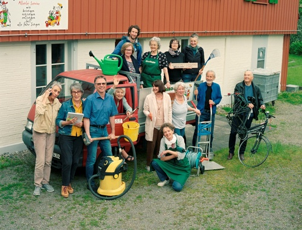
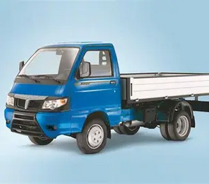
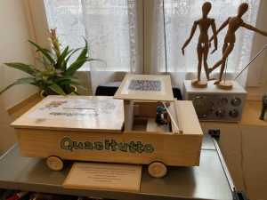
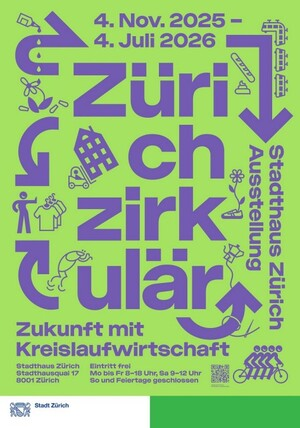

Neues von Quasitutto, 6. Ausgabe
Seit dem letzten Newsletter (NL) ist im Verein Vieles passiert. Gerne geben wir Ihnen einen Einblick in unsere Tätigkeiten.
Unser aktives Team stellt sich vor:

Unser Piaggio Transporter
|
 So etwa könnte unser Wunschfahrzeug aussehen, mit dem wir in die Zukunft fahren wollen. |
Unser Piaggio Transporter beschäftigt uns nach wie vor. Im letzten NL berichteten wir, dass er nochmals die MFK, (Motorfahrzeugkontrolle) bestanden hat. Was uns freut. Trotzdem brauchen wir in naher Zukunft einen neuen Transporter. Für einen neuen Transporter haben wir nicht genug finanzielle Mittel, das heisst wir sind auf Spenden angewiesen. Damit das neue Fahrzeug vor Regen und Schnee geschützt ist, möchten wir einen Unterstand vor unserer Werkstatt bauen. Wir sind mit der Gemeinde Thalwil im Gespräch dazu und hoffen auch in dieser Sache auf Unterstützung. Diesen Sommer haben wir fleissig an einem „Leitbild von QT“ gearbeitet. Gemeint ist damit eine schriftliche Erklärung unserer Organisation über ihr Selbstverständnis und unsere Grundprinzipien, also eine Selbstbeschreibung. Dieses Leitbild soll unseren Verein in seiner ganzen Vielfalt positiv darstellen. Mit dieser Darstellung wollen wir uns bei Stiftungen um einen finanziellen Beitrag bewerben. Ebenfalls werden wir bei Banken und der Gemeinde Thalwil um finanzielle Unterstützung anfragen. Wir hoffen, dass wir da erfolgreich sein werden. Den Transporter brauchen wir, um viele Auftrage ausführen zu können. Denn diese sind für uns eine wichtige Einnahmequelle. |
|
Mit dem selbst gebauten Automodell auf der rechten Seite haben wir während der Ausstellung „Autofokus“ im Museum Thalwil (Oktober 24 – März 25) gut 1000 Fr. für eine Neuanschaffung erhalten. Weitere Spenden nehmen wir gerne entgegen 😉 IBAN CH60 0900 0000 8576 1700 0 |
Unsere Sammelkasse  |
 Unser aktueller Transporter
Unser aktueller TransporterWeitere wichtige Informationen zum Thema Nachhaltigkeit
Auszug aus «Blickpunkt» das Magazin der Stiftung für Konsumentenschutz, Okt. 25.
Gegen den Wegwerf-Wahnsinn
Rund 90'000 Tonnen Elektrogeräte landen jährlich im Schweizer Müll – viele davon wären noch reparierbar. Der Konsumentenschutz engagiert sich für einen Reparaturbonus, um dem Flicken wieder neuen Auftrieb zu geben.
Was ist ein Reparaturbonus?
Ein Reparaturbonus ist ein finanzieller Anreiz für alle, die kaputte Gegenstände reparieren lassen, anstatt sie wegzuwerfen. Wer sich für eine Reparatur entscheidet, erhält einen Teil der Reparaturkosten erstattet. Leer geht hingegen aus, wer den defekten Gegenstand wegwirft und einen neuen kauft.
Österreich zeigt wie es geht
In Österreich gibt es bereits seit April 2022 einen staatlichen Reparaturbonus. Seit der Einführung wurden bereits mehr als 1,7 Millionen Reparaturen unterstützt. Auch Zürich hat das ökologische Potenzial erkannt und will ein Zeichen setzen. Die Stadt plant für nächstes Jahr ein Pilotprojekt und spricht 2,9 Mio CHF für die Beteiligung an Reparaturkosten.
Ganzer Artikel hier.
Wir hoffen, dass unsere Energiestadt Thalwil auch bald auf diesen Zug aufspringt.
Verein Repair Café
|
Der Verein Repair Café leistet bereits seit 2016 3x pro Jahr gratis Reparatur. Bei der letzten Veranstaltung (am 18.10.25) konnten wir 56 Geräte reparieren. Nächstes Repair Café: 28. März 2026 |
|

Ausstellung in Zürich
|
 |
Ausstellung Zürich zirkulär, Zukunft mit Kreislaufwirtschaft, 4. November 2025 – 4. Juli 2026 Ausstellung im Stadthaus. Viele Veranstaltungen jeden Monat. Ganzer Flyer: Siehe Webseite hier. |
Aktivitäten des Vereins
- 27. September 2025 mit Stand am Neuzuzüger Anlass
- 24. Oktober mit Stand am Tag für ältere Menschen
- Unser Engagement mit der Sek. Schule im Projektunterricht wird auch in diesem Schuljahr stattfinden. Wir haben darüber im letzten NL berichtet.
- Unsere Website ist noch in Arbeit. Wir arbeiten mit Hochdruck an der Vollendung. Die wichtigsten Sachen kann man jederzeit aus unserer Seite www.quasitutto.ch einsehen.
Und nicht vergessen:
 ..... IM .....
..... IM ..... 
Reparaturfreudige Grüsse,
Das Quasitutto-Team
Impressum
- Redaktions-Team: Maria Fritschy und Anna Michel
- Technischer Support: Thomas Hartmeier
Gerne können Sie unser Neues von Quasitutto auch an Interessierte, Freunde und Bekannte weiterleiten. Kritik und Tipps sind willkommen.
Sollte Ihnen Neues von Quasitutto nicht gefallen, können Sie es hier abbestellen.